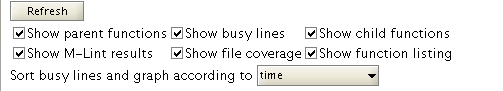
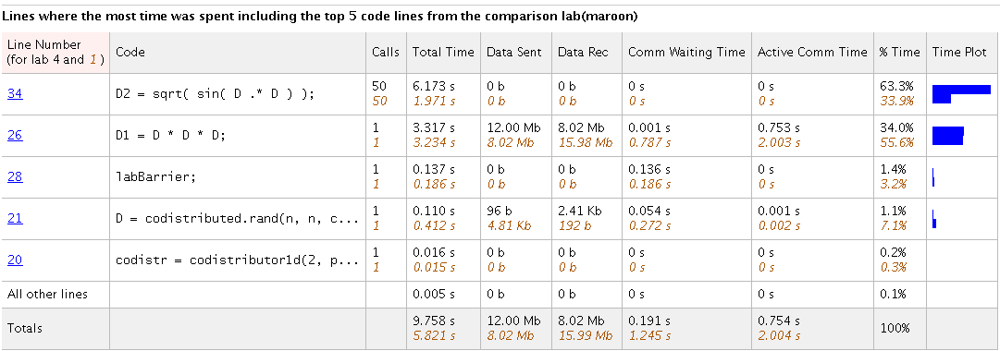
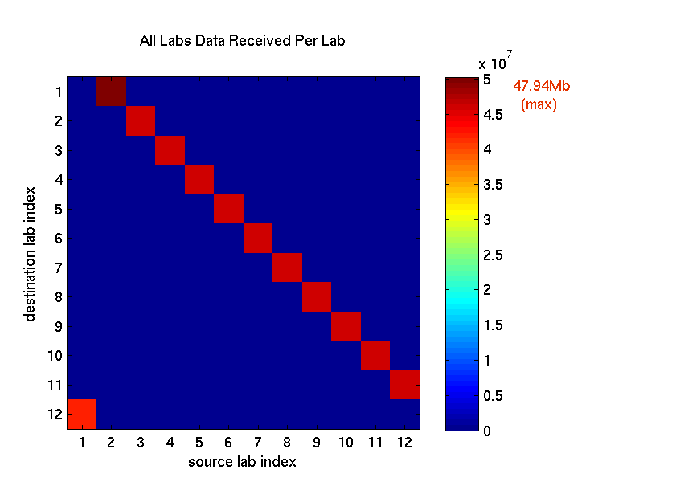

Profiling Load Unbalanced Codistributed Arrays
The example in this demo uses an unevenly distributed array to show how to use the profiler when dealing with implicit communication.
Contents
Prerequisites:
- Interactive Parallel Mode in Parallel Computing Toolbox™ (See pmode in the users guide.)
- Using the Parallel Profiler in Pmode
This demo demonstrates how to use the parallel profiler in the case of an unevenly distributed array. The easiest way to create a codistributed array is to pass a codistributor as an argument, such as in rand(N, codistributor). This evenly distributes your matrix of size N between your MATLAB® workers. To get unbalanced data distribution, you can get some number of columns of a codistributed array as a function of labindex.
The plots in this demo are produced from a 12-node MATLAB cluster. Everything else is shown running under a four-node local scheduler.
The Algorithm
The algorithm we chose for this codistributed array is relatively simple. We generate a large matrix such that each lab gets an approximately 512-by-512 submatrix, except for the first lab. The first lab receives only one column of the matrix and the other columns are assigned to the last lab. Thus, on a four-lab cluster, lab 1 keeps only a 1-by-512 column, labs 2 and 3 have their allotted partitions, and lab 4 has its allotted partition plus the additional columns (left over from lab 1). The end result is an unbalanced workload when doing zero communication element-wise operations (such as sin) and communication delays with data parallel operations (such as codistributed/mtimes). We start with a data parallel operation first (codistributed/mtimes). We then perform, in a loop, sqrt, sin, and inner product operations, all of which only operate on individual elements of the matrix.
The MATLAB file code for this example can be found in: pctdemo_aux_profdistarray
In this example, the size of the matrix differs depending on the number of MATLAB workers (numlabs). However, it takes approximately the same amount of computation time (not including communication) to run this demo on any cluster, so you can try using a larger cluster without having to wait a long time.
P>> labBarrier; % synchronize all the labs
P>> mpiprofile reset; P>> mpiprofile on; P>> pctdemo_aux_profdistarray();
1 This lab has 1024 rows and 1 columns of a codistributed array
Calling mtimes on codistributed arrays
Calling embarrassingly parallel math functions (i.e. no communication is required)
on a codistributed array.
Done2 This lab has 1024 rows and 256 columns of a codistributed array
Calling mtimes on codistributed arrays
Calling embarrassingly parallel math functions (i.e. no communication is required)
on a codistributed array.
Done3 This lab has 1024 rows and 256 columns of a codistributed array
Calling mtimes on codistributed arrays
Calling embarrassingly parallel math functions (i.e. no communication is required)
on a codistributed array.
Done4 This lab has 1024 rows and 511 columns of a codistributed array
Calling mtimes on codistributed arrays
Calling embarrassingly parallel math functions (i.e. no communication is required)
on a codistributed array.
DoneP>> mpiprofile viewer;
1 Sending pmode lab2client to the MATLAB client for asynchronous evaluation.
First, browse the Function Summary Report, making sure it is sorted by the execution time by clicking the Total Time column. Then follow the link for the top-level function (which should be pctdemo_aux_profdistarray) to see the Function Detail Report.
The Busy Line Table in the Function Detail Report
Each MATLAB function entry has its own Busy Line table, which is useful if you want to profile multiple programs or demos at the same time.
- In the Function Detail Report, observe the communication information for the executed MATLAB code on a line-by-line basis.
- Compare profiling information using the Busy Line table. Click Compare max vs. min TotalTime. Observe the Busy Line table and check to see which line numbers took the most time by sorting the time field using the drop-down list. There are no for-loops in this code and no increasing complexity as you saw in the previous Profiling Parallel Work Distribution demo. However, there still is a large difference in computation load between the labs. Look at the sqrt( sin( D .* D ) ); line.


Despite the fact that no communication is required for this element-wise operation, the performance is not optimal, because some labs do more work than others. In the second row, (D*D*D), the total time taken is the same on both labs. However, the Data Rec and Data Sent columns show a large difference in the amount of data sent and received. The time taken for this mtimes is similar on all labs, because the codistributed array communication implicitly synchronizes all the labs.
In the ninth column (from the left) of the Busy Line table, a bar shows the percentage for the selected field (using the Sort busy lines list box). These bars can also be used to visually compare Total Time, and Data Sent or Data Received of the main and comparison labs.
Observing Codistributed Array Operations in Plot View
If you click the relevant function name and are in the Function Detail Report, you get more specific information about a codistributed array operation.
- To get the inter-lab communication data click Plot All PerLab Communication. In the first figure, you can see lab 1 transferring the most amount of data, and the last lab (lab 12) transferring the least amount of data.
- To go back to the Function Summary Report, click Home and then click on the pctdemo_aux_profdistarray link to view the Busy Line table again.
Using the comparisons, you can also see the amount of data communicated between each lab. This is constant for all labs except for the first and last labs. When there is no explicit communication, this indicates a distribution problem. In a typical codistributed array mtimes operation, labs that have the least amount of data (e.g., lab 1) receive all the required data from their neighboring labs (e.g., lab 2).
The Data Received Plot

In this Data Received Per Lab plot, there is a significant decrease in the amount of data transferred by the last lab and an increase in the amount transferred by the first lab. Observing the Receive Communication Time plot (not shown) further illustrates that there is something different going on in the first lab. That is, the first lab is spending the longest amount of time in communication.
As you can see, the uneven distribution of a matrix causes unnecessary communication delays when using data parallel codistributed array operations and uneven work distribution with task parallel (no communication) operations. In addition, labs (like the first lab in this demo) that are receiving more data start with the least amount of data prior to the codistributed array operation.